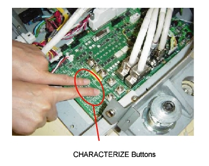
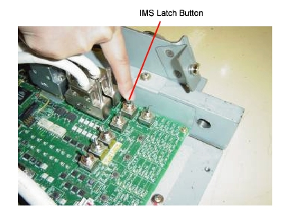
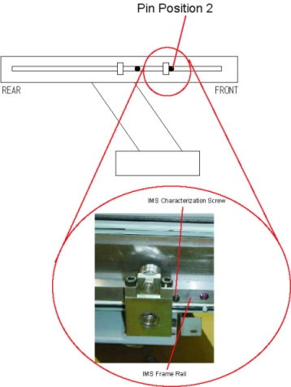
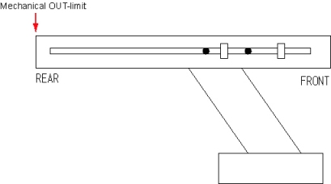

Operating Documentation
Direction 5193574-800, Rev# 22
LightSpeed 7.X Service Methods
Module Version 1.0, Version Date 10/24/08
Operating Documentation |
| Required Persons | Preliminary Reqs | Procedure | Finalization |
|---|---|---|---|
| 1 | 0 min | 30 mins | 30 mins |
| Last Revised: | 24 June 2008 |
| Item | Qty | Effectivity | Part# | Manufacturer | |
|---|---|---|---|---|---|
| IMS Characterization Screw | 1 | - | P9612YX or P9620YX | - | |
Move the table to the UP-limit position.
Remove the top right cover, right IMS cover, and front base cover.
Set the service switch (MODE_SEL) to the SERVICE to enter the service mode.
Confirm that the “IM” LED on the GTCB board in the table is ON. If it is NOT ON, press the “Motion Target” button until “IM” LED is ON.
Illustration 1: LED's on GTCB board

Press the two “Characterize” Buttons at the same time to start characterization.
Illustration 2: Starting Characterization

Confirm that the “UP/IN” LED is ON. See Illustration 1.
Using the Service Switches (ACTION), move the IMS until it is set outside of the characterization points on the IMS frame rail.
Remove the IMS characterization screw from the IMS support block.
Illustration 3: IMS Characterization screw

Insert the IMS characterization screw into the frame rail (Position 1) as shown, then move the table until the screw touches the IMS support block.
Illustration 4: Inserting the Characterization Screw (Position 1)

Set the IMS latch button to “IM_UNLATCH” position to unlatch the IMS.
Illustration 5: Set to IMS_UNLATCH

Move the IMS backward manually until the IMS characterization screw touches the IMS support block.
Press the two “Characterize” Buttons at the same time. See Illustration 2.
Confirm that the “DOWN/OUT” LED is ON. See Illustration 1.
Remove the IMS characterization screw from the rail.
Set the IMS latch button to “IM_LATCH” position to latch the IMS. See Illustration 5.
Using the Service Switches, move the IMS until it is set to the characterization points (Position 2) on the IMS frame rail.
Insert the IMS characterization screw into the frame rail, then move the table until the screw touches the IMS support block.
Illustration 6: IMS Characterization Screw (Position 2)

Set the IMS latch button to “IM_UNLATCH” position to unlatch the IMS. See Illustration 5.
Move the IMS backward manually until the IMS characterization screw touches the IMS support block.
Press the two “Characterize” Buttons at the same time. See Illustration 2.
Confirm that both of “DOWN/OUT” LED and “UP/IN” LED are ON. See Illustration 1.
Remove the IMS characterization screw from the rail.
Move the IMS backward manually to the mechanical OUT-limit position.
Illustration 7: Mechanical OUT limit position

Press the two “Characterize” Buttons at the same time. See Illustration 2.
5 - 10 seconds later (to write characterization data to the flash memory), confirm that both of LED's (UP/IN and DOWN/OUT) are OFF.
Set the IMS latch button to “IM_LATCH” position to latch the IMS. See Illustration 1.
If both of LED's blink during procedures, it means that characterization fails. Retry characterization.
Re-install the IMS characterization screw to the proper position (the lower side of the IMS support block). See Illustration 3
When finished with characterization set the service switch (MODE_SEL) to the NORMAL position for customer use.
Install the covers in the reverse order of removal.